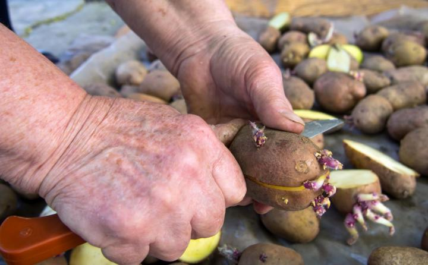

The potato (Solanum tuberosum) is a cool-weather vegetable typically yields bigger crops in the northern portion of the U.S., however, they can be grown as a winter crop in warmer climates. Potatoes are related to peppers, tomatoes, and eggplants, but are adapted to higher elevations and harsher growing conditions; they were first documented by the Incas in Peru. According to the Maine Potato Board, this vegetable arrived in the American Colonies in 1621 when the Governor of Bermuda sent potatoes to the Governor of Virginia at Jamestown
The edible part of the potato is the underground “tuber” which is an enlarged underground storage portion of the potato plant. The tuber develops from underground stems called stolons once the plants are 6 to 8 inches tall, or around 5 to 7 weeks after planting.
Potatoes are nuggets of goodness. The nutrient-rich skin provides 45% of your daily vitamin C and 18% of potassium plus many more nutrients.
Plus, gardeners know that—despite the limited options that you see in the grocery store—there’s much more to potatoes than the traditional Idaho white potato. In fact, there are over 100 types of potatoes, varying in skin color and flesh color as well as size from large to fingerling! Floury types are perfect for roasting or mashing, while a firm, waxy potato is superb boiled or as salad potatoes. Learn all about potato varieties in the section below.
Potatoes for planting are called ‘seed potatoes’ and usually sold in bags or netting. Planting season for seed potatoes starts in the spring, two to four weeks before the last frost.
planting
You’ll need a location with at least 6 hours of direct sunlight and fertile, loose, well-drained soil; hard or compacted soil leads to misshapen tubers. Ideally, soil is slightly acid (pH 5.8 to 6.5) and the soil temperature is at least 45º to 55ºF (7° to 13°C). In fall, mix compost or organic matter into the soil. Learn more about compost,soil amendments, and preparing soil for planting.)
When to Plant Potatoes
Garden potatoes can be planted 2 to 4 weeks before the average last frost date. The soil temperature should be at least 55°F during the day and 45°F at night. But pay more attention to the soil than the calendar to determine planting time. The soil should not be so wet that it sticks together and is hard to work. Let it dry out a bit first. If you have a late and wet spring, you can plant later—through April (depending on location) or even June, especially in containers.
In cooler regions, the early-maturing potatoes are usually planted early to mid-April. In warmer regions, planting times range from September to February; in central Florida, gardeners plant potatoes in January, and in Georgia they plant in February.
How to Plant Potatoes
Potatoes for planting are called ‘seed potatoes’ and usually sold in bags or netting. Use certified (disease-resistant) seed potatoes from which eyes (buds) protrude.Do not confuse seed potatoes with potato seeds or grocery produce.
The moment you get them, break them free, lay them out in a tray (such as an old egg carton) and pop them somewhere bright and frost-free to sprout – such as an indoor windowsill. This is a process called ‘chitting’. It’s not essential, but chitting helps speed things along a bit so that by the time they’re planted they’ll be primed and itching to send out roots.
As the video below shows, after a month of chitting, the potatoes produced stout, stocky, green sprouts, which is exactly what we’re after; we don’t want the long, pale sprouts you get when potatoes are left in the dark. If you haven’t had a chance to chit your potatoes and it’s already time to plant don’t worry – just get them in the ground.
A great way to get more seed potatoes for free, is to cut them in half. But only do this if they’ve got plenty of “eyes” which appear as small dimples and are where the sprouts emerge from. You want to put the end of the potatoes with the most eyes facing upwards for this reason.
At least 2 days ahead of planting, use a clean, sharp paring knife to cut large potatoes into golf ball-size pieces, with 1 to 2 eyes each. This time allows the pieces to heal, or form a protective layer over the cut surface, improving both moisture retention and rot resistance. Do not cut up seed potatoes that are smaller than a hen’s egg; plant them whole.

Preparing seed potatoes for planting.
Outside, prepare the planting area by simply spreading out compost across the surface to a depth of around an inch or 3 cm. Potatoes are fairly hungry plants, so this extra nourishment will help to support good soil fertility and a strong harvest.
4 Methods of Plant Potatoes
Dig Holes: For each seed potato, dig a hole about 6 inches deep (or 16 cm). Add in a little slow-release organic fertilizer (eg., chicken manure pellets) and then pop in the potato with sprouts pointing up and cover with soil. Space potatoes about 16 inches (or 40 cm) apart in both directions for early types. Maincrop potatoes need a bit more space to stretch their legs, so space them at 18 inches (or 45 cm) apart.
Dig V-Shaped Trenches: Dig 2- to 2.5-foot trenches (60 to 75 inches). Lay a nourishing cushion of garden compost along the bottom and a few of those chicken manure pellets then set your tubers into position about one foot or 30 cm apart. Then just fill back in. I don’t think it makes a huge difference which way you plant, so do whatever’s easiest in the space you have.
Plant in Straw: Nestle seed potatoes down into the soil surface then cover them with straw.
Plant Potatoes in Pots: If you don’t have the garden space, plant in large containers, old compost sacks or purpose-sold potato sacks. Fill the bottom of your pot or sack with about 4 inches (10 cm) of potting mix then lay one or two potatoes on top and cover. Once the foliage is growing, add in more potting mix, a bit at a time, to hill or earth them up until the soil level reaches the top at which point the foliage almost seems to explode in size.
Growing
Watering Potatoes: Firstly, water! This is really important because potatoes are lush and leafy plants, and those tubers take a lot of effort to swell. So if it’s dry, water thoroughly. Maintain even moisture, especially from the time after the flowers bloom. Potatoes need 1 to 2 inches of water a week. Too much water right after planting and not enough as the potatoes begin to form can cause them to become misshapen. Stop watering when the foliage begins to turn yellow and die off.
If you’re growing in containers, take exta care to keep your plants really well watered, especially in warmer weather, as this really will make all the difference in achieving a good crop.
Hilling Potatoes: Potato flavor is improved by depth and darkness. As the potato plants grow above the soil surface, you’ll need to periodically “hill up” or mound up soil and compost around the plant so that only the top leaves stick out of the ground. It’s vital not to allow potato spuds to be exposed to sunlight, as this also causes them to turn green and produce a chemical called solanine, which gives off a bitter taste and is toxic. Do the hilling in the morning, when plants are at their tallest. (During the heat of the day, plants start drooping.) Just draw up the soil with a hoe every time the stems get to around 6 to 8 inches (15 to 20 cm) tall so that just the very tops are left poking out. Continue doing this in stages until you can no longer draw up any more soil, or the foliage closes over in-between the rows.
If you’re growing your potatoes in a smaller raised bed, it may be easier to simply top up with organic matter around the whole area.
Hilling keeps potatoes from getting sunburned, which can cause them to turn green and produce a bitter, toxic chemical.
Protect From Frost: Late frosts can damage the young foliage – something to watch out for with early starts. Frost-bitten plants usually have enough energy to shake off any damage, but it can set plants back nonetheless. So if a frost is forecast and potatoes stand to get clobbered, do whatever you can to protect them. Cover the area in a few layers of warming fleece or row cover fabric, cover clusters of shoots with pots, or draw up the soil to bury the young shoots.
Note: In cool growing seasons, potato vines may sport berries. The berries are the fruit. Cut one open and see how it resembles its cousin, the tomato. Potato berries are poisonous and inedible. Plus, their seeds will not produce potato plants that resemble the parent. Discard them.
Recommended varieties
There are three classifications for potatoes based on when you harvest (vs. when you plant). If you harvest for storage, be sure to choose the right type:
Early-season potatoes: First to be planted in early spring. Grow quick (60 to 80 days), ready to harvest by early summer, tender flesh, thinner skin, store up to a few weeks
Mid-season potatoes (also called Second Earlies): mature in 80 to 100 days, typically lifted up from second half of summer, store up to a month
Late crops: mature in 100 to 130 days, best for storing, lasting 2 to 3 months in the right conditions; planted in August and harvested in fall.
Also, decide on the texture and flavor of your potatoes, and how you’d like to eat them:
Dry-fleshed, mealy potatoes like russets and long white potatoes are used for baking, frying and mashing. As mashed potatoes, they will not be gluey, and they will absorb gravy, butter or sour cream.
Moist, waxy, round potatoes are great in soups, curries, frittatas, and salads because they don’t fall apart when cookied. You can pan-fry leftover boiled potatoes. When you mash waxy potatoes, they can become sticky.
Red-skinned potatoes are often used for boiling or for potato salads.
Some potato varieties, such as ‘Yukon Gold,’ fall somewhere in between truly waxy and mealy.
Early Varieties:
‘Irish Cobbler’: tan skin, irregular shape (great heirloom potato for delicious mashed potatoes!)
‘Red Norland’: deep red skin, sweet, delicate flavor, great in potato salads or boiled
‘Mountain Rose’: red skin and pink flesh, resistant to some viruses
Mid-Season Varieties
‘Yukon Gold’: popular, tan skin and buttery-yellow flesh, mid to large size
‘Red Pontiac’: red skin, deep eyes (easiest and most adaptable red potato there is to grow)
‘Viking’: red skin, very productive
‘Chieftan’: red skin, resistant to potato scab, stores well
Late Varieties
‘Katahdin’: tan skin, resistant to some viruses
‘Kennebec’: tan skin, resistant to some viruses and late blight
‘Elba’: tan skin, large round tubers, resistant to blight and potato scab
‘Fingerling Salad’ potatoes
harvesting
Harvesting potatoes is fun! It’s like unearthing nature’s treasures. Harvest potatoes on dry days. Dig up gently, being careful not to puncture the tubers. Avoid cutting or bruising potato skin. The soil should not be compacted, so digging should be easy. Potatoes can tolerate light frost, but when the first hard frost is expected, it’s time to get out the shovels and start digging potatoes.
Harvesting at the right stage keeps tubers from sitting about for too long and upping the chances of a slug or disease attack, particularly for maincrop spuds.
Earlies are the first to be lifted, usually while the plants are still in flower. Your tubers should be about the size of a hen’s egg or a touch bigger, but really it’s up to you how big you want them. Use a fork and work your way in from the edge of the plant, taking care to avoid stabbing into the potatoes themselves. Once you’ve loosened the plants you can also lift them up to expose most of the spuds, but be sure to dig around in the soil for any you’ve missed!
Dig up maincrop spuds once the foliage is dying back towards the end of the growing season. I find it easier to cut back the foliage before digging up the potatoes on a dry day. Leave the potatoes on the soil surface for a few hours so the skin can dry off a bit. Don’t leave them there any longer or they may start to turn green.
Extra tips:
Toughen up potatoes for storage before harvest by not watering them much after mid-August.
Dig up a test hill to see how mature the potatoes are. The skins of mature potatoes are thick and firmly attached to the flesh. If the skins are thin and rub off easily, your potatoes are still too new and should be left in the ground for a few more days.
If the soil is very wet, let the potatoes air-dry as much as possible before putting them in bags or baskets.
Small green spots can be trimmed off, but if there is significant greening, throw the potato out.
Only store potatoes that are free of bruises, disease or damage, as you don’t want problems in storage, and check on stored potatoes every few weeks and remove any that are starting to spoil.
pests/diseases
The most common potato disease is scab, which causes rough, scabby patches on the skin. These can be peeled off along with the skin so it’s not all bed. But scabby potatoes ain’t half ugly! So avoid scab in the first place by watering to keep the soil consistently moist at the critical time when tubers are developing – basically once the foliage has started to bush out. Adding compost or other organic matter to the soil before planting should help improve water retention too. It’s also worth seeking out scab-resistant varieties.
Potato blight, or late blight, is a little trickier to dodge. It strikes after a period of warm, wet weather, seemingly out of the blue. Blight causes dark patches on the leaves as it takes hold – then spreads with devastating speed killing off your entire crop. There are a few blight-resistant varieties, but the choice is very limited. The good news is that early varieties are usually harvested before the blight arrives later in summer. Check regularly and if you do spot the tell-tale signs of blight, act fast to cut back the foliage before it spreads to the potatoes below ground then harvest them as soon as possible.
Potato Pests and Diseases
Pest/Disease
Type
Symptoms
Control/Prevention
Aphids
Insect
Misshapen/yellow leaves; sticky “honeydew” (excrement); sooty, black mold
Grow companion plants; knock off with water spray; apply insecticidal soap; put banana or orange peels around plants; wipe leaves with a 1 to 2 percent solution of dish soap (no additives) and water every 2 to 3 days for 2 weeks; add native plants to invite beneficial insects
Blight (early)
Virus
Leaves, beginning with lower ones, develop dark, concentric spots, often with yellow outer ring, and eventually die; tubers/stems also may be affected
Destroy infected plants; choose resistant varieties; maintain proper soil fertility; ensure good air circulation; avoid overhead watering; water in morning; disinfect tools; rotate crops
Blight (late)
Insect
Small, greenish gray, water-soaked spots on leaves that enlarge and turn brown, sometimes with yellow halo; white, fuzzy growth on leaf undersides; stems also affected; tubers develop reddish brown dry rot
Destroy infected plants; choose resistant varieties and certified, disease-free seed potatoes; ensure good air circulation; avoid overhead watering; remove plant debris; rotate crops
Colorado potato beetle
Insect
Yellow-orange eggs laid in clusters on leaf undersides; larvae and adults chew holes in foliage
Handpick; use straw mulch; weed; use row covers; destroy crop residue; rotate crops. In the nymph state, they can be controlled with diatomaceous earth (food grade). If they continue to be a problem, a few sprays of Spinosad, an organic pesticide, will get rid of the beetles. Always use products at dawn or dusk to avoid harming beneficial insects.
Flea beetles
Insect
Tiny black beetles that jump when spooked. Numerous tiny holes in leaves; clusters of holes, as if leaf was hit by shotgun
Use row covers; mulch heavily; add native plants to invite beneficial insects
Leafhoppers
Insect
White shed skins on leaf undersides (from nymph molting); stippling (many tiny spots) on leaves; “hopperburn” (leaves yellow/brown, curled, or stunted); reduced yield
Knock nymphs off leaf undersides with strong spray of water; use row covers; monitor adults with yellow sticky traps; weed; destroy crop residue
Potato scab
Bacteria
Brown, rough, corky spots that can be shallow/raised/sunken
Choose resistant varieties and certified disease-free potato seed; maintain soil pH between 5.0 and 5.2; dust seed potatoes with sulfur before planting; use pine needle mulch; keep soil moist after tubers start to form; do not use manure; rotate crops
Tomato hornworms
Insect
Chewed leaves (initially toward top of plant); rapid defoliation; black/green excrement
Handpick (leave larvae that have white, ricelike cocoons, which house braconid wasp parasites); till soil in fall and spring; weed; add native plants to invite beneficial insects; grow dill as a trap crop or basil/marigolds as repellents; spray Bacillus thuringiensis (Bt)
Whiteflies
Insect
Sticky “honeydew” (excrement); sooty, black mold; yellow/silver areas on leaves; wilted/stunted plants; distortion; adults fly if disturbed; some species transmit viruses
Remove infested leaves/plants; use handheld vacuum to remove pests; spray water on leaf undersides in morning/evening to knock off pests; monitor adults with yellow sticky traps; spray with insecticidal soap; invite beneficial insects and hummingbirds with native plants; weed; use reflective mulch
Trap by digging 2- to 4-inch-deep holes every 3 to 10 feet, fill with mix of germinating beans/corn/peas or potato sections as bait, cover with soil or a board, in 1 week uncover and kill collected wireworms; provide good drainage; remove plant debris; rotate crops